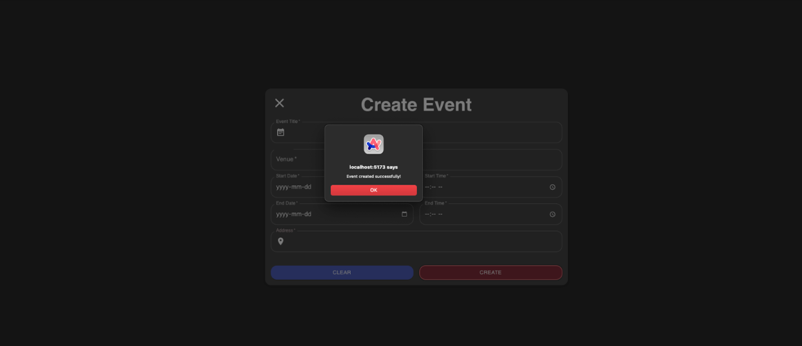
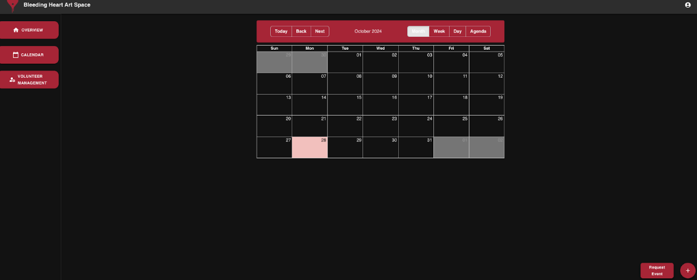
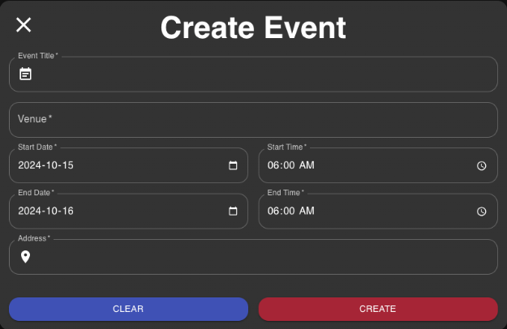
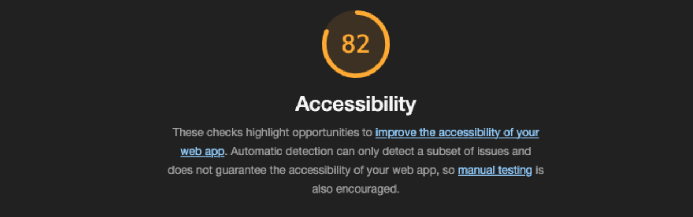

Usability Heuristics for User Interface Design
Visibility of system status
The design should always keep users informed about what is going on, through appropriate feedback within a reasonable amount of time.
We have implemented this by letting users know when an event or change has taken place in the system through alert pop-ups seen in the browser.

Aesthetic and Minimal Design
Interfaces should not contain information that is irrelevant or rarely needed. Every extra unit of information in an interface competes with the relevant units of information and diminishes their relative visibility.
By building the UI of the app as a minimal interface with just the necessary tasks, we have achieved a minimal design while adopting Bleeding Heart Art Space’s color theme to add to the aesthetic.

User Control and Freedom
Users often perform actions by mistake. They need a clearly marked "emergency exit" to leave the unwanted action without having to go through an extended process.
By adding a way to exit or undo an action, users are able to navigate back from an unwanted action without having to complete the whole process. This is done in our app by adding an exit/close button on the top left of our pop-up windows.

Accessibility
To test our website’s accessibility, we used Google’s Lighthouse to generate reports. More info on Lighthouse can be found here.
Upon running the tool on our website, we get an 82% for accessibility.

Lighthouse tests accessibility in these areas:
- Keyboard Navigation: Ensures all features work with a keyboard.
- Color Contrast: Checks text readability against backgrounds.
- Alt Text: Verifies images have descriptive text.
- ARIA Labels: Assesses proper ARIA roles for screen readers.
- Page Structure: Ensures proper use of headings and HTML tags.
- Form Labels: Confirms all inputs have clear labels.
- Interactive Elements: Checks buttons/links are labeled and focusable.
These help improve usability for users with disabilities.
Areas we will improve on in Sprint 4 include:
- Aria: roles on incompatible elements
- Names and Labels: Images do not have alt attributes
- Contrast: Background and foreground colors do not have a sufficient contrast ratio.